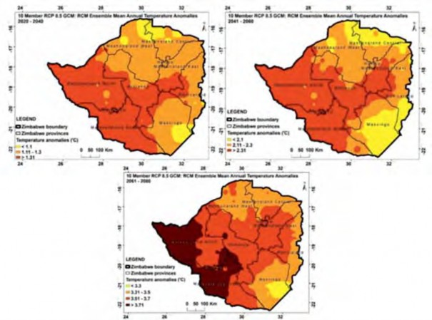
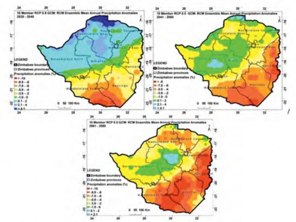
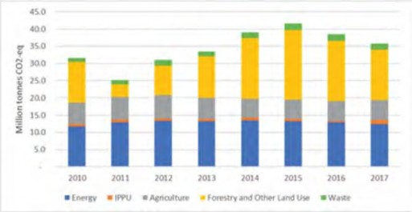
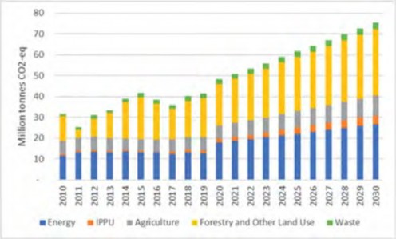
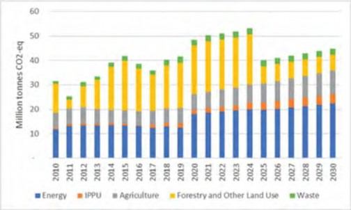
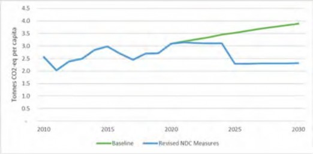
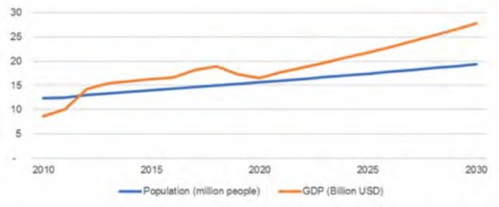
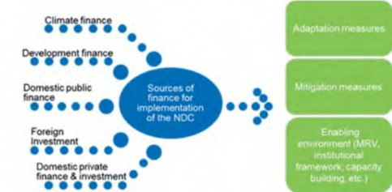

Zimbabwe Revised Nationally Determined Contribution
2021
ZIMBABWE
Zimbabwe Revised Nationally Determined Contribution
2021
GOVERNMENT OF ZIMBABWE
Climate change has been widely recognized as a major global issue that threatens to alter the natural environment, disrupt the well-being of society, and deter socio-economic development, making climate change mitigation and adaptation interventions imperative to reduce any further deterioration in the climate system.
In 2015, Parties to the United Nations Framework Convention on Climate Change (UNFCCC) came together and adopted the Paris Agreement which aims to transform Parties’ developmental trajectories and set the world on a course towards sustainable development. The Paris Agreement recognizes that to significantly reduce the risks and impacts of climate change, all Parties need to reduce their greenhouse gas emission levels with the aim of holding global average temperature increase to well below 2°C above pre-industrial levels whilst pursuing efforts to limit temperature increase to 1.5°C above pre-industrial levels.
To achieve the temperature goal, the Paris Agreement requires Parties to communicate their own greenhouse gas emissions reduction commitments through the Nationally Determined Contributions (NDCs) every five years with each submission reflecting increased ambition from the previous one. Zimbabwe submitted its Intended Nationally Determined Contribution (INDC) in 2015 which became the country’s first NDC in 2017 when the country ratified the Paris Agreement. In line with the Paris Agreement to revise the NDCs every five years, Zimbabwe presents its revised Nationally Determined Contribution (NDC) which represents a fair and ambitious 7% increase in emission reduction from 33% in the first NDC to 40% in this revised NDC. Unlike the first NDC which covered only the Energy Sector, this NDC makes progress towards an economy-wide NDC as it includes the Waste, Industrial Processes and Product Use and; the Agriculture, Forestry and Other Land-Use Sectors. In addition, the revised NDC presents adaptation action in response to the country’s high vulnerability to climate change impacts.
The crafting of Zimbabwe’s revised NDC was informed by the National Development Strategy 1 (2021- 2025) which seeks to transform Zimbabwe into an upper-middle income economy by 2030. In this regard, Zimbabwe will pursue a holistic and balanced development trajectory, which seeks to balance national development, fulfilment of our multilateral international obligations, and sustainable development.
While the country has integrated most of the actions identified in this revised NDC in its development policies and strategies, the Government of Zimbabwe calls upon potential partners and stakeholders to come on board to support the implementation of this revised NDC for the country to meet its developmental aspirations and climate change mitigation obligations.
……………………............….........………
Minister of Environment, Climate, Tourism and Hospitality Industry
Zimbabwe’s Revised NDC Report was developed under the auspices of the NDC Partnership’s Climate Action Enhancement Package (CAEP) with technical and financial support from the Common Market for Eastern and Southern Africa (COMESA), Food and Agriculture Organization (FAO), ICLEI Africa Local Governments for Sustainability), International Labour Organization (ILO), International Renewable Energy Agency (IRENA), Stockholm Environment Institute (SEI), United Nations Development Programme (UNDP), United Nations Environment Programme (UNEP) and World Bank. The Government of Zimbabwe (GOZ) would like to thank these organisations for their support in delivering Zimbabwe’s revised Nationally Determined Contribution (NDC). GOZ also acknowledges the contributions of focal points in the relevant Ministries, Departments and Agencies, Development Partners, Private Sector, Local Authorities, Civil Society, Research and Academia who contributed to the successful delivery of this revised NDC.
Preparation of the NDC was done under the expert guidance and leadership of Washington Zhakata (Director of the Climate Change Management Department); Kudzai Ndidzano (Deputy Director); Lawrence Mashungu (Mitigation Expert); Tirivanhu Muhwati (Compliance Officer) and Emily Matingo (Adaptation Expert) at the Ministry of Environment, Climate, Tourism and Hospitality Industry (MECTHI). The main contributing authors are Ryan Hogarth, Richard Smithers, James Harries, Clémence Moinier (Ricardo Energy & Environment), Dingane Sithole, Sekai Ngarize, Leonard Unganai, Caroline Tagwireyi, Farai Mapanda and Samantha Magosha (independent consultants). In particular, the team would like to express its gratitude to Tafadzwa Dhlakama, the NDC Partnership Coordinator; Gibson Guvheya, Nkulumo Zinyengere and Enos Esikuri (World Bank) for the technical guidance, facilitation and coordination of the preparation of this report.
|
Abbreviation |
Definition |
|
AFOLU |
Agriculture, Forestry and Other Land-Use |
|
AR5 |
Fifth Assessment Report of the Inter-governmental Panel on Climate Change |
|
BAU |
Business As Usual |
|
BUR |
Biennial Update Report |
|
°C |
Degrees Celsius |
|
CAEP |
Climate Action Enhancement Package |
|
CCMD |
Climate Change Management Department |
|
CFF |
Climate Finance Facility |
|
CO |
Carbon monoxide |
|
CO2eq |
Carbon dioxide equivalent |
|
COP |
Conference of the Parties |
|
COMESA |
Common Market for Eastern and Southern Africa |
|
CORDEX |
Coordinated Regional Climate Downscaling Experiment |
|
FAO |
Food and Agriculture Organization |
|
FOLU |
Forestry and Other Land Use |
|
GACMO |
Greenhouse Gas Abatement Cost Model |
|
GDP |
Gross Domestic Product |
|
GHG |
Greenhouse Gas |
|
ICLEI |
International Council for Local Environmental Initiatives |
|
ICTU |
Information for Clarity, Transparency and Understanding |
|
IDBZ |
Infrastructure Development Bank of Zimbabwe |
|
INDC |
Intended Nationally Determined Contribution |
|
IPCC |
Intergovernmental Panel on Climate Change |
|
IPPU |
Industrial Processes and Product Use |
|
IRENA |
International Renewable Energy Agency |
|
LEAP |
Low Emissions Analysis Platform |
|
LEDS |
Low Emissions Development Strategy |
|
LULUCF |
Land Use and Land Use Change and Forestry |
|
MAC |
Marginal Abatement Cost |
|
MECTHI |
Ministry of Environment, Climate, Tourism and Hospitality Industry |
|
MDAs |
Ministries, Departments and Agencies |
|
MRV |
Measurement, Reporting and Verification |
|
NAP |
National Adaptation Plan |
|
NCCF |
National Climate Change Fund |
|
Abbreviation |
Definition |
|
NCCRS |
National Climate Change Response Strategy |
|
NDC |
Nationally Determined Contribution |
|
NDCSF |
NDC Support Facility |
|
NDS1 |
National Development Strategy 1 |
|
NIE |
National Implementing Entity |
|
NMVOCs |
Non-methane volatile organic compounds |
|
NPV |
Net Present Value |
|
SDR |
Social Discount Rate |
|
R&D |
Research and Development |
|
RCP |
Representative greenhouse gas Concentration Pathway |
|
REDD+ |
Reducing Emissions from Deforestation and Forest Degradation |
|
SAPP |
Southern Africa Power Pool |
|
SDG |
Sustainable Development Goal |
|
SLCPs |
Short-lived Climate Pollutants |
|
SEI |
Stockholm Environment Institute |
|
tCO2e |
Tonnes carbon dioxide equivalent |
|
UNDP |
United Nations Development Programme |
|
UNEP |
United Nations Environment Programme |
|
UNFCCC |
United Nations Framework Convention on Climate Change |
|
US$ |
United States Dollar |
|
VOC |
Volatile Organic Compounds |
|
ZIMREF |
Zimbabwe Reconstruction Fund |
Zimbabwe Revised Nationally Determined Contribution 2021
|
Parameter |
2015 INDC |
2021 Revised NDC |
|
Adaptation |
INDC adaptation measures focused on the agriculture sector. |
Adaptation measures are now being planned across the economy and will be formalised in the forthcoming National Adaptation Plan that is expected to be completed by December 31st 2021. |
|
IPCC sectors covered in mitigation analysis |
Energy Sector emissions only |
Expanded to include additional sectors for Energy; Industrial Processes and Product Use (IPPU); Waste; and Agriculture, Forestry and Other Land Use (AFOLU). |
|
Greenhouse gases (GHG) covered |
Carbon dioxide (CO2), methane (CH4), nitrous oxide (N2O) |
Expanded to include CO2, CH4, N2O and Hydrofluorocarbons. Black Carbon (a short-lived climate pollutant), and co- emitted air pollutants (PM2.5, NOx, SO2, non-methane volatile organic compounds (NMVOCs), carbon monoxide (CO) were also included in the analysis. |
|
Business-as-usual (BAU) scenario |
The INDC BAU baseline focused solely on per capita energy emissions. Zimbabwean per capita energy emissions were projected to be 1.06 tCO2eq in 2020, 2.57 tCO2eq in 2025 and 3.31 tCO2eq in 2030 under business as usual. |
Updated to include all IPCC sectors. National total emissions in the base data period ranged between 25.24 MtCO2e in 2011 and 41.66 MtCO2eq in 2015. Emissions in 2017 were 35.84 MtCO2eq. National total emissions per capita in the base data period ranged between 2.03 tCO2eq in 2011 and 2.98 tCO2eq in 2015. Emissions per capita in 2017 were 2.45 tCO2eq. The NDC revision process incorporated impacts of COVID-19 on emissions trends and macroeconomic parameters, including GDP, which fed into the updated baseline. |
|
Emission reduction target |
The INDC emission reduction target was a 33% reduction in energy-related emissions per capita compared to BAU by 2030, conditional on international support. In the mitigation scenario, energy-related emissions per capita were projected to be 2.21 tCO2eq in 2030. |
The updated target is a 40% reduction in economy-wide GHG emissions per capita compared to BAU by 2030, conditional on international support. In the mitigation scenario, economy-wide emissions per capita are projected to be 2.3 tCO2eq in 2030. |
|
Climate policies and Strategies |
Key climate policies already in place when the INDC was submitted included the National Climate Change Response Strategy (NCCRS). |
Additional climate policies have been adopted since 2015, including the National Climate Policy, Low Emission Development Strategy, National Adaptation Plan Roadmap, Third National Communication to the UNFCCC, the 2017 System Development Plan, the Renewable Energy Policy, Biofuels Policy, Revised National Gender Policy and Implementation Plan, National Water Resources Master Plan, (draft) National Agriculture Policy Framework, Climate-Smart Agricultural Investment Plan, National Industrial Development Policy and Environmental Management Act. |
Zimbabwe is Party to the United Nations Framework Convention on Climate Change (UNFCCC) and its 2015 Paris Agreement. Article Two of the Paris Agreement seeks to enhance implementation of the Convention by:
Holding the increase in the global average temperature to well below 2°C and pursuing efforts to limit the temperature increase to 1.5°C above pre-industrial levels, recognizing that this would significantly reduce the risks and impacts of climate change;
Increasing the ability to adapt to the adverse impacts of climate change and foster climate resilience and low greenhouse gas emissions development, in a manner that does not threaten food production; and
Making finance flows consistent with a pathway towards low greenhouse gas emissions and climate-resilient development.
The Paris Agreement established a series of five-year cycles to increase ambition through Parties’ submission of updated NDCs. Through these updates, Parties should aim to achieve peaking of greenhouse gas (GHG) emissions as soon as possible (recognising that peaking will take longer for developing countries) and to achieve net zero GHG emissions by the second half of the century. The five-yearly updates of countries’ NDCs should increase ambition, expand sectoral scope and accelerate implementation of climate actions.
Zimbabwe submitted its Intended Nationally Determined Contribution (INDC) to the UNFCCC in September 2015. In 2017, the INDC became Zimbabwe’s first-generation Nationally Determined Contribution (NDC), after the country ratified the Paris Agreement. The INDC was focused on specific sectors. It defined priority actions to build resilience to climate change in agriculture and mitigate energy- related GHG emissions, as well as finance and investment requirements for both climate pillars. The INDC emission reduction target was a 33% reduction in energy emissions per capita relative to a 2030 baseline.
This document presents Zimbabwe’s Revised NDC including an updated per capita emission reduction target that applies to all sectors of the economy, relative to a 2030 baseline. The updated emissions reduction target raises ambition beyond what was pledged in Zimbabwe’s INDC as presented in the headline box below. This Revised NDC represents a fair enhancement of ambition and expands sectoral scope relative to the INDC in light of Zimbabwe’s national circumstances and respective capabilities.
A list of economy-wide adaptation measures is included based on a national climate vulnerability and risk assessment.
Zimbabwe’s revised NDC target is a 40% per capita emissions reduction across all sectors of the economy below the projected business as usual scenario by 2030 (relative to the 2017 emission baseline).
The emissions baseline and expanded list of mitigation measures now cover all Intergovernmental Panel on Climate Change (IPCC) sectors namely Energy; Industrial Processes and Product Use (IPPU); Waste; and Agriculture, Forestry and Other Land Use (AFOLU).
The NDC revision process incorporated impacts of COVID-19 on emissions trends and macroeconomic parameters, including Gross Domestic Product (GDP).
Compliance with the Revised NDC remains fully conditional on affordable international financial support, investment, technology development and transfer and capacity development.
2.1 National Context & Vision
Zimbabwe’s updated NDC takes into account its low GHG emissions per capita and substantial vulnerability to the impacts of climate change.
Zimbabwe is a small net emitter by global standards, responsible for 0.07%1 (2.5 tonnes CO2eq emissions per capita; BUR1 2017) of global emissions. In comparison, the G20 are responsible for 78% of emissions.2 On the other hand, Zimbabwe is among the World’s 50 most vulnerable countries according to the ND- GAIN Index.3 Hence, Zimbabwe’s revised NDC and wider climate policy focuses as much on adaptation as it does on mitigation.
Zimbabwe’s economy is highly reliant on agriculture which, along with forestry, employs 70% of the population (directly or indirectly). Agricultural production is largely rainfed and sensitive to fluctuating weather patterns. Increasingly frequent and intense extreme weather events, including tropical cyclones, droughts, mid-season dry spells, floods and localised heavy downpours are also having a negative impact on other sectors of the economy. Sectors affected directly and indirectly include energy, infrastructure and industry, due to the many interconnections between different sectors’ climate vulnerabilities.
In addition, Zimbabwe’s position as a landlocked country at the heart of Southern Africa makes it highly vulnerable to direct or indirect climate-related impacts on neighbouring countries, and more generally elsewhere, that may lead to transboundary or “spill-over” effects. These may be related to:
Trade of agricultural commodities, as manifested in global food prices through integrated supply and distribution chains;
Trade of non-agricultural commodities, e.g., raw materials supply, manufacturing industries;
Infrastructure and transport, e.g., energy supply, energy infrastructure and regional transportation networks;
Migration and displacement of people, e.g., through changing tourism flows and mass migration (either forced or voluntary); and
Spread of diseases and invasive species.
Zimbabwe’s Vision 2030 seeks to transform Zimbabwe to an upper middle-income economy by 2030, with a per capita Gross National Income of over US$5 000 in real terms. The National Development Strategy (NDS1), 2021-2025, supports Vision 2030, targeting an annual GDP growth rate of above 5% and the creation of at least 760,000 formal jobs over the five-year period. NDS1 aims to increase agriculture production, especially by smallholder farmers, which will increase Zimbabwe’s prosperity, food security and resilience against climate change. NDS1 also aims to increase electricity and coal supply to resurgent iron and steel sectors, both of which will lead to an upward trajectory in emissions under a business-as- usual (BAU) scenario.
Since submitting the INDC, Zimbabwe has adopted several policies and strategies to reduce emissions and address climate vulnerabilities. Zimbabwe’s 2017 National Climate Policy aims to build a climate- resilient and low-carbon economy. In 2021, Zimbabwe developed a Low Emission Development Strategy (LEDS), which includes mitigation measures across all the sectors of the economy. In 2020 Zimbabwe launched the Climate-Smart Agricultural Investment Plan (CASAIP) which modelled future climate change impacts (rainfall, temperature) on crop yields, livestock incomes and diseases. The CASAIP recommends technology packages and investments to crime-proof agriculture in different agro-ecological regions. In 2017, Zimbabwe adopted a revised National Gender Policy that includes a specific thematic area on gender and climate change and promotes the mainstreaming of gender in environmental and climate change policies and strategies. In 2022, Zimbabwe expects to launch a National Adaptation Plan (NAP) that will seek to mainstream climate change into national and sub-national planning processes in relevant economic and social development sectors.
Each of the policies and strategies mentioned above fed into the NDC revision process and will be key components to its implementation. These and other policies or planning frameworks are discussed further in Section 5.
Zimbabwe used a whole of government and whole of society approach to update the NDC, ensuring that the process was a collaborative and inclusive one. Validation workshops drawing on the participation of a wide range of stakeholders were held for the endorsement of all technical work products used to inform the NDC update. As Zimbabwe looks ahead to the continuation of implementation of the NDC, further stakeholder engagement is envisaged, ensuring that vulnerable groups, including those representing women and youth, as well as sub-national entities are accorded the opportunity to feed into the process.
2.2 Structure of the Revised NDC Report
This Revised NDC Report is structured as follows. Section 1 summarises the changes between Zimbabwe’s INDC and this revised NDC. Section 2 introduces the document and presents the national context of Zimbabwe and the international context of Zimbabwe’s contribution. Section 3 outlines Zimbabwe’s vulnerability to climate change and key areas for adaptation. Section 4 presents the approach to mitigation analysis and Zimbabwe’s updated total and per capita national GHG emission baseline and target. It then details the mitigation priorities and actions across the Energy, IPPU, AFOLU and Waste sectors. Section 5 presents the package of policies and legislation that will underpin implementation of the NDC, and Section 6 outlines the institutional and financial framework. Section 7 concludes with a table summarising the Information for Clarity, Transparency and Understanding (ICTU).
Outputs from the National Adaptation Planning (NAP)4 process were considered in the development of all adaptation-related elements of the NDC to reflect the progress of the NAP process and thereby facilitate the coherence of the two documents. The NDC also accounts for other government policies and technical guidance documents on vulnerability and adaptation in Zimbabwe.
3.1 Vulnerability to climate change and adaptation
Zimbabwe’s climate vulnerabilities identified here, as a function of climate sensitivities and adaptive capacities,5 have been determined from review of the country’s relevant national studies. Zimbabwe’s sustainable development is constrained by climate sensitivities and associated lack of adaptive capacities of its human, physical, natural, social and financial capital in relation to the direct and indirect impacts of “slow-onset” climate changes and extreme weather events. Zimbabwe’s landlocked position at the heart of Southern Africa means that it is not only highly vulnerable to climate impacts within its borders but also to spill-over effects from the impacts of climate change on neighbouring countries and internationally.
Common factors that determine the climate vulnerability (i.e., high climate sensitivities and low adaptive capacities) of Zimbabwe across sectors include, in no particular order:
Insufficient water availability due to a predominantly dry climate, compounded by growing competition for water resources increases all sectors’ vulnerability to the potential impact of water shortages on production levels.
Poverty, which limits access to socio-economic services and to social and financial capital that may otherwise help populations adapt to the impact of climate change.
Heavy reliance on rainfed agriculture and natural resources. Approximately 70% of the population is reliant on agriculture with the majority dependant on rainfed activities, which are particularly sensitive to climate variability.
High population growth, which places pressures on public services (health, infrastructure, transport) and on natural resources, subsequently affecting all sectors that rely on them (energy, agriculture, tourism, water, etc).
Gender issues and intersectionality. Women represent most of the agricultural workforce and are particularly vulnerable, as they have limited access to markets and to education, which restricts their ability to diversify their income in the event that their primary source of income is affected. Intersectionality of gender, disability, poverty and child-headed households compounds climate change vulnerabilities and is of importance in relation to the principle of “leaving no one behind”.6
Weak and/or inadequate early warning systems, which prevent key sectors from anticipating extreme events and, hence, leaves them vulnerable to adverse impacts. Disaster risk reduction is also not fully mainstreamed in development planning and investments in climate proofing infrastructure are limited.
The low level of awareness and understanding about climate change, its likely impacts and possible adaptation solutions, including in relation to sustainable management of resources.
In the documents informing the development of the NAP, the following sectors are rated as highly vulnerable: agriculture; water; health; forestry and biodiversity; infrastructure; human settlements; and tourism. Other studies rate additional sectors in Zimbabwe as vulnerable: energy, waste, mining, transport, and industry.7
Climate vulnerabilities are further amplified by sectors’ interconnectedness. For example, the agriculture sector’s vulnerabilities are compounded by vulnerabilities in the transport sector, as agricultural products need to be transported along the value chains. Such interconnections exist between all sectors. For this reason, Zimbabwe is adopting an economy-wide approach to adaptation that seeks to address climate vulnerabilities across all sectors.
3.2 Climate impacts
Existing studies consider the climate impacts that Zimbabwe currently experiences. These studies have been reviewed, and their content is summarised below.
All sectors of the economy have suffered direct impacts as a result of their exposure to hazards resulting from climate variability and change. Climate impacts are not confined to specific sectors due to the interconnections between vulnerabilities. Slow-onset climate changes and extreme weather events impact environmental, societal and economic assets upon which all sectors depend. Hence, existing climate impacts in Zimbabwe are summarised in Table 1 by type of capital (human, physical, natural, social, and financial) exposed to climate hazards rather than by sector.8
In addition to the direct impacts of climate change, Zimbabwe is expected to suffer from indirect impacts caused by spill-over effects from direct climate impacts in neighbouring countries and internationally. The Transnational Climate Impacts Index9 rates Zimbabwe’s overall exposure to transnational impacts of climate change as 8 out of 10. Most notably, spill-over effects may arise from:
Transboundary water dependency. All of Zimbabwe’s River basins are shared with other countries, both as sources and recipients of headwaters for major rivers. The management of water resources in those countries and heightened competition over shared water resources may impact on water availability and supply; energy availability and supply; transboundary biodiversity conservation; tourism and green jobs.
Remittance flows from emigrant workers from Zimbabwe. In 2019, personal remittances received in Zimbabwe accounted for 8% of its total GDP.10 Direct impacts in the host country of the migrant worker (e.g., South Africa) may lead to economic disruptions for those receiving remittances and the macro-economy.
Importance of Foreign Direct Investments (FDI). Zimbabwe’s net inflows of FDI made up 3% of its GDP in 2018.11 However, assets may lose value and returns on investment may be disrupted or reduced either suddenly or gradually due to climate change, resulting in lower investments over time.
Immigration from climate-vulnerable countries. Zimbabwe currently hosts 9,000 refugees. Though its net migration rate is negative (there is more emigration than immigration), the number of refugees has doubled since 2010 which may be a consequence of slow onset migration due to ecosystem degradation or major environmental events.12 Climate impacts in other countries may lead to an increase in push-factors to emigrate to Zimbabwe.
Dependency on imported cereals. Zimbabwe has a negative trade balance for food products. Being dependent on food imports from abroad, Zimbabwe is exposed to climate-related disruptions in the availability, price or quality of food products.
Table 1: Existing and potential climate impacts in Zimbabwe summarised by type of capital
|
Human capital |
|
|
Exposure |
All citizens are exposed directly or indirectly to climate-related hazards that impact them and their assets. Among citizens, marginalised groups are more exposed as their geographical location is determined by lower costs of living. These groups include women, youths and children, people who are physically handicapped, indigenous peoples, migrants and internally displaced and inhabitants of unfavourable agro-ecological regions. |
|
Impacts |
Climate impacts on human capital affect citizens’ health, safety and sources of livelihood. Flooding and drought events increase the spread of water-borne diseases. A recent study (2018) identified that between 1990 and 2010, a cholera outbreak was registered in one of every three droughts and one of every 15 floods13. In May 2009, 98,592 cases and 4,288 cholera deaths were reported, with 60 of the 62 districts in the country affected. This affects employees’ health and safety, and cause reductions in productivity across sectors (including agriculture, mining, energy, industry and commerce, tourism, and transport). In turn, reductions in productivity will lead to lower incomes and loss of livelihoods. Impacts on health from heat-stress are also increasing, as a result of extreme temperatures, which may be particularly harmful to children and the elderly, partly because of their physiological predisposition and limited ability to manage their heat risk. Slow-onset changes in climate also cause reductions in water supply. In May 2020, the Bulawayo City Council implemented a weekly 144-hours water- shedding programme following an acute shortage of water, when the Lower Ncema Dam was decommissioned after the water level reached an all-time low of 6.7% following an extended drought. Zimbabwe is estimated to experience a decline of 38% in national water availability per capita by 2050 due to climate change14. This threatens agricultural production, with 70% of the population standing to lose their main source of livelihood. In addition to agriculture, climate impacts also threaten other sectors’ activities. Degradation of natural resources reduces the number of tourists, leading to losses of income by about 7.3% of the formally employed in this sector. Extreme weather events and heavy rains affects mining during the rainy season, which affects an estimated 500,000 to 1.5 million artisanal and small-scale miners in the country who rely on mining as a source of income. The 2020/21 la Nina rainy season significantly slowed-down the artisanal mining sector, leading to reduced gold deliveries and foreign currency earnings, and translating into large macroeconomic impacts. Environmental stress functions as an aggravating factor which adds to systemic, economic, and demographic factors that shape individual access to livelihoods, access to resources and vulnerability and, ultimately, affect their capacity to move. |
|
Physical capital |
|
|
Exposure |
Sectors rely on a large array of physical infrastructure and assets, such as water storage (>10,000 small, medium and large dams) and reticulation investments, energy generation and distribution infrastructure, mining infrastructure, transport (about 18,601 km state (2012 estimate) and 9,499 km gravel road network) and telecommunications infrastructure, manufacturing and distribution facilities, and tourism facilities. Among the key assets most exposed to hazards include: dams, sewer lines, roads/bridges, powerlines, buildings, telecommunication facilities, mine shafts, recreation facilities, manufacturing plants, irrigation infrastructure (as of 2017, Zimbabwe’s land area under irrigation totalled 110,832 ha15) and post-harvest crop storage facilities. |
|
Impacts |
Following extreme weather events, assets can suffer physical damages that limit or prevent their functioning. For example, tropical Cyclone Idai and the resultant flooding and landslides in March 2019 destroyed bridges, roads, telecommunications infrastructure, agricultural land, crops/livestock and several buildings/houses with 270,000 people in Zimbabwe affected. These direct impacts then disrupt operations in key sectors, such as electricity, water and transport, and disrupt entire supply chains, such as fruits (bananas, pineapples) from Chimanimani District. The disruption of this national capital stock bodes ill for long-run economic growth and poverty alleviation and takes time and scantily available resources to restore. |
|
Natural capital |
|
|
Exposure |
Water (surface and underground), soil, pastures, biodiversity (hot-spots: Kalahari and Save-Limpopo eco-regions), forests (covering about 46% of the total land area, 179,748km2), and wetlands (there are more than 1,100 of economic value in the country that cover about 1.2 million hectares, with dambos being the most important wetland type in terms of economic and environmental benefits) are directly exposed to extreme climatic events and slow-onset climate changes across the country. As a result, their provision of ecosystem services is also reduced. These services include food supply, water purification, soil stabilisation and health, timber and fibre supply, touristic attraction, genetic diversity, nutrient recycling, flood control, and runoff modulation. |
|
Impacts |
The 1991/1992 rain season experienced the most extreme drought event in the past 3 decades. This episode reduced water discharge over Victoria Falls, plant biodiversity in the rainforest, and resulted in the death of about 148 elephants in the Hwange National park and about 1,500 in Gonarezhou National Park. Water shortages, lack of grazing and heat stress threaten the survival of wildlife species, especially those sensitive to heat, such as elephants. Droughts have continued to have similar impacts on ecological systems and biodiversity in recent years, most notably in 2018. A recent study in Hwange National park projected a reduction of 40% of elephant habitat by 2050 and a change in elephant population distribution because of climate change16. Other factors that will increase elephants’ vulnerability to climate change include the increased spread of diseases, moderate genetic diversity, and slow reproductive rates.17 Impacts on these natural assets affects all sectors that rely on their provision of ecosystem services. For example, higher evaporation rates cause reduced availability of water from surface and groundwater resources, which, in turn, leads to:
Low rainfall conditions, for example during the 2015–2016 drought, caused livestock disease rates to increase, accounting for 61% of reported cattle deaths, particularly in Manicaland and Masvingo provinces. Between November 2017 and May 2018, a combination of late, heavy rains and a shortage in cattle dip led to over 3,000 cattle perishing from tick-borne diseases, primarily Theileriosis. |
|
Social capital |
|
|
Exposure |
Zimbabwe’s societal stability relies on norms, relationships and networks, social structure and cohesion, and institutions and laws. These are all exposed to impacts resulting from climate variability and change. |
|
Impacts |
Climate impacts, including from extreme weather events, lead to seasonal and forced migration in search of livelihood opportunities. Men and the able-bodied migrate, altering the social structure of communities by leaving women behind and responsible for agricultural production in rural areas. The search for water, sufficient rainfall, fertile soils and good pastures for livestock has also triggered climate migrants who have settled at water sources, wetlands, riverbanks and grazing lands. The worst affected areas are in Manicaland Province. These new illegal and unplanned settlements pose social, economic and administrative challenges and generate natural-resource-use conflicts at a local level, and precipitate heightened environmental degradation in fragile ecosystems. Forced migration also hinders development by increasing pressures on urban infrastructure and services and increasing competition over scarce resources, thereby increasing the risk of conflict and resulting in worse health, education and other social outcomes among migrants. On the other hand, climate variability and change also has impacts on institutions, as it strengthens the need for implementing adaptation and social policies alongside economic growth. The Zimbabwe National Development Strategy (2021-2025) framework, for example, captures “Environment Protection, Climate Resilience and Natural Resources Management” as a national priority to achieve sustainable socio-economic development. |
|
Financial capital |
|
|
Exposure |
Incomes, savings, credit, insurance, and employment held by all citizens and/ or businesses are exposed to climate variability and change. Vulnerable groups with limited or insecure access to financial services and informal businesses are particularly exposed and represent a majority of the rural area population (65%). In 2012, only a few women (3%) and men (4%) were served by other formal financial institutions, such as insurance companies. |
|
Impacts |
During droughts or floods, crop yields reductions lead to income losses from farmers. The estimated value of crop losses each year is US $126 million. In 2001, the estimated loss was US $321 million, increasing to US $513 million in 2008. At the same time, families face a decrease in savings, as product prices increase during drought years by 30 to 40%, increasing households’ expenditures. During the 2015–2016 drought the price of cattle in high rainfall areas ranged from $350–$450, but communities in drought-affected districts were selling cattle for as little as $20 - $60 to buy food. Reduced supplies of agricultural raw materials also reduce employment opportunities in industry and commerce, as was the case during the extreme drought of 1991/92 when a number of industries faced closure, particularly in the City of Bulawayo. In addition, insurance products are less available, as insurers run higher covariate risks, which are anathema to statistical models of insurance, as extreme events are more widespread and affect many clients at once. |
Source: ICLEI (2021), World Bank (2020), UNDP (2021) Government of Zimbabwe (2016, 2020, 2021), USAID (2019),
3.3 Projected Climate Change in Zimbabwe
Projected climate changes faced by Zimbabwe have been identified from review of the ICLEI Risk and Vulnerability Assessment Report (2020) and of relevant data included in the NAP development process.18 Overall, the country is projected to experience a progressive reduction in precipitation, increase in temperatures, increasingly volatile weather events, and less dependable seasons.
Based on CORDEX data for Representative Concentration Pathway (RCP) 4.5 and RCP8.5 scenarios,19 there is high confidence that Zimbabwe’s mean annual temperatures will increase by 1 to 1.5°C by 2040 from a 1986-2005 baseline. Droughts will increase in frequency and intensity. The increase in Zimbabwe’s mean annual temperatures could potentially exceed 3°C by 2050, depending on the actual global emissions pathway achieved. Figure 1 shows projections under RCP8.5 for 2020-2080.
Figure 1: Spatial distribution of Zimbabwe average temperature increase for the periods of 2020-2040 (panel 1), 2041-2060 (panel 2) and 2061-2080 (panel 3) under RCP 8.518

In turn, average rainfall is projected to further decrease by approximately 10% with significant regional differences, although there is more uncertainty over these estimates. This will induce shorter rainy seasons and shifts in the timing of their onset and cessation. The intensity of rainfall events is projected to increase, which may increase flood events. However, projections of the frequency and intensity of extreme weather events, particularly cyclones, are uncertain. The spatial distribution of projected rainfall is shown in Figure 2. This highlights that the Southern and Eastern geographies of Zimbabwe are projected to experience the most significant decreases in rainfall between 2020 and 2080.
Figure 2: Spatial distribution of Zimbabwe mean annual Climate Research Unit (CRU) rainfall for the periods of 2020-2040 (panel 1), 2041-2060 (panel 2) and 2061-2080 (panel 3) under RCP 8.520

3.4 Adaptation measures
Direct and indirect exposure to climate-related hazards, shocks and stressors are already causing adverse impacts on Zimbabwe’s human, physical, natural, social and financial capital. Climate projections suggest that climate-related hazards associated with slow-onset changes in temperature and precipitation, and with the magnitude and frequency of extreme events, will continue to worsen. In order to avoid further similar and more damaging impacts, Zimbabwe urgently needs to implement a wide range of adaptation measures, which seek to reduce climate sensitivities, increase adaptive capacities and/or reduce direct or indirect exposure to climate-related hazards.
At this stage and for the summative purposes of this high-level NDC report, Zimbabwe is initially focusing on four high-level priority adaptation measures, namely to:
Develop, implement and scale-up climate smart agriculture solutions and strengthen agricultural value chains and markets;
Enhance early warning and climate-related disaster risk reduction systems (including information management systems);
Ensure climate resilient infrastructure designs and development; and
Develop and promote resilient and sustainable water resources management,
Table 2 below summarises these actions in greater detail. On-going development of the NAP will lead to a more expansive list of adaptation measures. Once the NAP has been finalised, Zimbabwe has the option under the Paris Agreement to update its NDC to include the more expansive list of adaptation measures that speak to the economy-wide vulnerabilities to climate change and re-submit it to the UNFCCC prior to the end of the next five-year cycle.
Gender will be mainstreamed throughout the implementation of all adaptation measures. This will ensure that gender-biases are prevented when planning for their implementation, and that the measures can also directly target gender inequality as an important factor of vulnerability to climate change. Similarly, the measures will also consider the role of the youth as a way to provide opportunities for employment and skills development, and to ensure that youth perspectives are represented when planning for implementation.
Table 2: Priority adaptation measures
|
Measure 1 |
Develop, implement and scale-up climate smart agriculture solutions and strengthen the resilience of agricultural value chains and markets |
|
Description |
Zimbabwe will promote the use and roll-out of gender sensitive climate-smart agriculture technologies and practices such as land and water resources conservation, sustainable mechanisation, agro-ecology, water-efficient irrigation, renewable energy and energy efficiency, climate adapted crop types/varieties and livestock types/breeds, crop/livestock diversification, agro-forestry, integrated pest and disease management, post-harvest technologies, improved livestock management, fodder production and livestock feeding strategies, silvi-pastoral systems. Zimbabwe will also implement actions that focus on: (i) increasing resource-use efficiency along the agricultural value chain (ii) supporting value addition to agricultural products (iii) improving market access for women and youth farmers in remote areas, (iv) minimizing waste, and (v) reducing inequalities along agricultural value chains. Agricultural value-chains largely employ women. Implementing this measure thus requires actions that consider gender barriers to accessing information and resources (such as lack of collateral, illiteracy, etc), as well as actions that directly address gender inequalities (i.e. supporting women in accessing collateral and finance, reducing the burden of work, etc). |
|
Adaptation benefits |
Actions under this measure are expected to increase adaptive capacity by providing the technology and tools necessary to increase efficiency of agricultural production. This would allow sustainable use of resources, such as water and soil in the long-term, thereby reducing sensitivity of water and ecosystems. Adaptive capacity would also be improved by providing the tools to anticipate future changes in climate and adjust production accordingly. Finally, actions would reduce sensitivity to climate change by expanding the use of climate-resilient breeds of crops and livestock. Strengthening the resilience of agricultural value chains and resource use efficiency is expected to reduce the sensitivity of water, energy, waste, and biodiversity sector to climate change and variabilty. Industry and commerce’s sensitivity would also decrease through increased stability of the agriculture value chain. |
|
Co-benefits |
This measure is expected to contribute to achieving SDGs 1, 2, 3, 4, 5, 6, 8, 10, 11, 12, 13. In particular, it would reduce sensitivity of women and youth by providing them with the knowledge and skills to maintain agricultural production throughout varying climate, and to diversify their sources of income beyond production. As agricultural value-chains largely employ women, they are more at risk of unemployment when the industry is exposed. Strengthening the resilience of the agriculture industry hence contributes to reducing women’s chances of unemployment due to climate change21. Widespread adoption of climate-smart agriculture, including conservation tillage, would contribute to mitigation efforts by increasing resource-use efficiency and increasing capacity of healthier soils to capture and sequester carbon. Incorporation of legumes in crop rotations has the potential to significantly reduce nitrogen fertilizer demand and ammonium nitrate fertilizer production thus driving a corresponding reduction in nitrous oxide emissions. |
|
Measure 2 |
Enhance early warning and climate-related disaster risk reduction systems (including information management systems) |
|
Description |
Zimbabwe will take steps to: (i) enhance early warning systems, including through better information management systems (ii) provide the systems and knowledge to manage disaster risks at national and community-level, and (ii) support the coordination of responses to climate hazards and to climate impacts across sectors and geographies. |
|
Adaptation benefits |
Actions under this measure would benefit all sectors by increasing their adaptive capacity through improving knowledge of future events and improving systems to prevent, prepare for, and/or manage their consequences. Adaptation activities would reduce exposure of key vulnerable groups located in hazard-prone areas by allowing them to relocate when hazards are foreseen. |
|
Co-benefits |
This measure is expected to contribute to achieving all SDGs, except SDGs 14 and 16. Investments in disaster risk reduction would also reduce the costs of rehabilitation and reconstruction, thereby providing wider economic and social benefits. |
|
Measure 3
|
Ensure climate-resilient infrastructure and design |
|
Description |
Zimbabwe will implement actions that: (i) provide the means and incentives for new infrastructure to be planned, designed, built and operated while accounting for future climate change, including extreme-weather events, and (ii) facilitate retro-fitting of previously built infrastructure to ensure it is resilient to future climate events. This measure applies to infrastructure such as buildings, roads, bridges, telecommunications infrastructure, water infrastructures like dams, sewages, drains, water supply pipes, pumps. It also includes actions that use energy generating technologies (wind, photovoltaic solar) that are not reliant on climate-sensitive hydrological resources. |
|
Adaptation benefits |
Actions under this measure would reduce the climate sensitivities of all sectors that are reliant on infrastructure. Urban areas would benefit most. Urban populations would also benefit from a reduction in potential damage to infrastructure and related risks to people. Reducing the climate sensitivity of the energy sector would indirectly reduce the climate sensitivity of the many sectors that are reliant on energy supply. |
|
Co-benefits |
This measure is expected to contribute to achieving SDGs 1, 3, 4, 5, 6, 7, 8, 9, 10, 11, 13. Enhancing the use of renewable energy sources would deliver mitigation benefits. |
|
Measure 4 |
Develop and promote resilient water resources management |
|
Description |
Zimbabwe will implement actions which: (i) support the use of best available hydro-climatic information to improve water resource management (water resource assessment), (ii) explore options to increase water supply from surface and underground (water demand management and water use), considering gender differences in water supply and access, and (iii) support the management of extreme events (integrated flood management, drought management). |
|
Adaptation benefits |
All sectors are vulnerable to climate change as a result of water scarcity. Actions under this measure are expected to increase their adaptive capacity by providing the tools and knowledge to better manage water resources and to reduce their sensitivity by increasing the availability of water. |
|
Co-benefits |
This measure is expected to contribute to achieving all SDGs. As a large number of women are responsible for collecting water for households, they lack the time and resources to focus on other income-generating activities. By improving the availability and supply of water, this measure would also benefit women directly by reducing their burden associated with fetching water, allowing them to access other productive activities. Increases in water efficiency will also bring mitigation benefits, as less resources would be used in water provision. Furthermore, crop and pasture productivity would increase, which would increase carbon-capture capacity through roots and residues, all other things being equal. |
Zimbabwe strongly supports the objectives of the Paris Agreement to limit global warming to well below 2°C whilst pursuing efforts towards further reduction to 1.5°C above pre-industrial levels. This section presents Zimbabwe’s updated national emission baseline and target.
The updated mitigation contribution draws on an economy wide GHG mitigation assessment and Zimbabwe’s Low Emissions Development Strategy (LEDS). The GHG emissions inventory was compiled using the 2006 IPCC Guidelines and a Zimbabwe emissions model was developed using the Low Emissions Analysis Platform (LEAP). First, historical (2010-2017) and projected emissions (2018-2030) were assessed to produce a Business-as-Usual (BAU) scenario without mitigation. The baseline projection scenario is based on key national documents, mainly NDS1, accounting for the impact of COVID-19 and the LEDS.22 Second, a revised mitigation scenario was developed through an evaluation of the GHG emission reduction potential of key plans and policies that have been put in place in Zimbabwe since 2015. A total of 70 mitigation measures were identified from existing plans, strategies and policies. A shortlist of 17 mitigation actions were selected to be included in the NDC based on agreed selection criteria including their mitigation potential, indicative implementation timeline and plans, and alignment with national development goals and targets.
Whilst the INDC only covered energy-related emissions, Zimbabwe’s revised baseline and mitigation target has been expanded to include emissions from all sectors, including Industrial Processes and Product Use (IPPU), Agriculture, Forestry and Other Land Use (AFOLU), and Waste. This is a significant increase in ambition from the INDC. On average, the Forestry and Other Land Use sector alone was the largest net GHG emitting sector between 2010 and 2017, with average net emission of 13 million tonnes. Additionally, the scope of gases covered by the mitigation contribution has been expanded to include Hydrofluorocarbons (HFCs) and Black Carbon (a short-lived climate pollutant), in addition to the carbon dioxide, methane and nitrous oxide from the INDC. Co-emitted air pollutants were also included in the analysis.23 The table below outlines the coverage of sectors and GHGs in the Revised NDC.
Based on this analysis, Zimbabwe has strengthened its mitigation contribution to be a 40% reduction in per capita GHG emissions below the projected business as usual scenario, a significant 7% increase from the 33% reduction in per capita emissions targeted for the INDC. Achieving this increased target will require considerable support from the international community. The 40% per capita emissions reduction target is therefore conditional on such support being forthcoming and provided in a timely manner. Zimbabwe looks forward to working closely with partners to implement this updated NDC and to deliver on its increased ambition.
Table 3: Coverage of sectors and GHGs in the Revised NDC
|
IPCC Sectors covered in baseline |
Economic sectors covered in mitigation actions |
Gases |
|||
|
Energy (Consumption across all sectors) |
Power generation and transmission |
Road transportation |
Residential households |
Manufacturing industry, construction |
CO2, N2O, CH4 |
|
IPPU |
Cement production |
Ferro alloy, Iron and steel |
Fertiliser production |
Air-conditioning, refrigeration |
CO2, N2O, HFCs |
|
AFOLU |
Forestry |
Agriculture |
Other Land Use |
CO2, N2O, CH4 |
|
|
Waste |
Municipal Solid waste management |
CH4 |
|||
4.1 The current status in terms of total GHG emissions
The analysis carried out to inform the NDC update estimates that in 2017, Zimbabwe’s net GHG emissions were 35.84 MtCO2eq.24 The Energy sector; and Agriculture, Forestry and Other Land Use (AFOLU) sector contributed the majority of the emissions in 2017 (33% and 54%, respectively), followed by Industrial Processes and Product Use (IPPU), and Waste. Throughout the base year period, emissions fluctuated over time (Figure 3) This mainly stems from the AFOLU sector, where there is substantial variability in the magnitude of emissions across the time series. Other sectors show less variability.
Figure 3: Total GHG emissions in Zimbabwe between 2010 and 2017 (MtCO2e)

Total GHG emissions in Zimbabwe are projected to increase by 110% to 75.4 MtCO2eq by 2030 under a business-as-usual (BAU) scenario if policies and measures to reduce GHGs are not implemented as outlined in Figure 4 below.
Figure 4: Total GHG emission projections from 2010 to 2030 for the baseline scenario

4.2 The updated GHG mitigation contribution
As shown in Figure 5 below, using the Zimbabwean LEAP model, the revised analysis suggests total GHG emissions in 2030 can be reduced by 40%, to 44.7 MtCO2eq.
Figure 5: Total GHG emission projections from 2010 to 2030 in the updated mitigation scenario

Figure 6 presents the per capita baseline and mitigation pathways showing a 40% reduction in per capita GHG emissions below BAU by 2030. These projections are based on population and GDP growth assumptions taken from the NDS1, which takes into account the impact of COVID-19 on Zimbabwe’s economy and its expected recovery and are presented in Figure 7. This higher per- capita reduction in GHG emissions and expansion of sectoral scope, including the economy wide coverage of adaptation beyond the original agricultural sector, all combine to demonstrate increased ambition for the Revised NDC.
Figure 6: Estimated reduction in per capita emissions

Figure 7: Population and GDP projections

Table 4 presents the mitigation contribution as drawing on a range of measures across the different sectors. The biggest reduction in emissions from the BAU comes from the AFOLU sector (25.35 MtCO2eq) followed by the energy sector (4.2 MtCO2eq), with smaller reductions from waste (0.65 MtCO2eq) and IPPU (0.45 MtCO2eq) sectors.
Table 4: Sectoral reductions in GHGs in 2030 compared to a baseline scenario
|
Sector |
2017 GHG emissions (million tonnes CO2-equivalent) |
2030 baseline GHG Emissions (million tonnes CO2-equivalent) |
2030 GHG emissions (million tonnes CO2- equivalent)- with mitigation actions |
|
Energy |
12.41 |
26.62 |
22.42 (-15.8%) |
|
IPPU |
1.17 |
4.20 |
3.75 (-10.7%) |
|
Agriculture, Forestry and Other Land Use |
20.50 |
41.57 |
16.22 (-61.0%) |
|
Waste |
1.76 |
3.00 |
2.35 (-21.6%) |
|
Total |
35.841 |
75.39 |
44.74 (-40.7%) |
4.3 Fairness and ambition
Zimbabwe’s updated target represents a fair and ambitious contribution. Zimbabwe is a highly vulnerable country to the impacts of climate change and the priority is to enhance climate resilience. Furthermore, Zimbabwe is a small contributor to global emissions, contributing only 0.07% of global emissions in 2017.25 Despite this, Zimbabwe is committed to ensuring a fair contribution to the Paris Agreement by demonstrating enhanced ambition, through an expansion of the mitigation contribution. Zimbabwe’s INDC target covered only the energy sector whilst the revised NDC is now economy-wide with an increased emissions reduction target.
4.4 Conditionality
The mitigation contribution outlined above is conditional on appropriate international support. The total investment cost of meeting the mitigation contribution is approximately US$4,834.47 million. However, it should be noted that not all of this will be new additional cost – some of the investments are already being made for non-climate reasons, for example investments into the energy sector. Furthermore, the cost data does not take into account the expected benefits of climate action, both in terms of avoiding future climate change but also from co-benefits such as green jobs, improved health and air quality and better access to energy. As explained in section 4, the scope of gases covered by the mitigation contribution has been expanded to include Hydrofluorocarbons and Black Carbon. These compounds were assessed for their mitigation potential as well as any co-benefits associated. For this reason, co-emitted air pollutants were also included in the analysis.
All actions will be implemented subject to availability of affordable international financial support, investment, ability to leverage domestic resources, technology development and transfer and capacity development. The various funding, technology and capacity mechanisms related to the Convention such as the Green Climate Fund (GCF), Climate Technology Centre and Network (CTCN), Adaptation Fund, Global Environment Facility (GEF) and continued investment by development partners in the national climate change discourse will be critical.
4.5 Co-benefits of identified mitigation measures
Adaptation is the over-riding priority for Zimbabwe given her vulnerability profile, an assessment of all the proposed mitigation actions was done to understand any impacts on climate resilience, positive or negative. Several mitigation measures included in the revised NDC have adaptation and broader sustainable development co-benefits including but not limited to the following:
Increased uptake of biogas will lead to improved air quality, health and gender outcomes.
Increased forested land and forest plantations will lead to improvements in soil stability, soil quality, groundwater quality, regulation of surface runoff, etc. thereby decreasing the sensitivity of all sectors that rely on these ecosystems.
Increased composting and waste-to-energy processing will result in employment creation and reduced pollution to soil and water bodies.
Increased energy efficiency, reduced transmission and distribution losses and increased electricity supply from solar and waste-to-energy projects will reduce supply constraints and reliance on climate-sensitive hydropower.
Improved fuel efficiency will lead to reduced fuel imports, improving Zimbabwe’s balance of trade and macroeconomic stability.
Increased public transport will lead to increased mobility for low-income populations.
Zimbabwe is determined to ensure a just transition to a climate resilient, low carbon economy. This means ensuring that the benefits of delivering such an economy are widely shared, and that support is provided to those that may be at risk from the move to a green economy, for example those that currently work in polluting industries. The just transition concept links to 14 of the 17 Sustainable Development Goals, explicitly drawing together SDGs 13 – climate action, 10 – reduced inequalities, 8 – decent work and economic growth, and 7 - affordable and clean energy. 26
The Government of Zimbabwe recognises that gender equality is central to climate action and a prerequisite for poverty reduction, food and nutrition security and sustainable development. As part of the update of the NDC, an assessment was made of the potential gender impacts of the policies and measures needed to deliver the mitigation contribution, drawing on previous analysis.27 As a result of this analysis the many gender-related benefits of the measures in each sector were highlighted to help Zimbabwe plan future policies in a way that mitigates potential negative impacts on gender equality.
Ensuring the representation and participation of all Zimbabweans in the development and implementation of the NDC is critical to ensuring its effectiveness. In particular, the issues of youth and gender must be considered integral to the process. The specific sensitivities and vulnerabilities of young people and women to the impacts of climate change and their essential role in achieving the emissions reductions targets demonstrate their importance as key stakeholders in the achievement of Zimbabwe’s revised NDC.
4.6 Sector level mitigation actions
The energy sector, including transport, is currently the second biggest contributor to total national GHG emissions in Zimbabwe, accounting for 33% of GHG emissions in 2017. The main source of GHG emissions in the sector is thermal power generation (37.71%), followed by residential (19.08%), road transportation (15.48%) and agriculture (13.84%). A summary of the mitigation measures from the energy sector is provided in Table 5.
Table 5: Summary of mitigation measures from the energy sector
|
# |
Mitigation Measure |
Reference document |
% GHG reduction vs 2030 baseline |
Absolute reduction 2030 vs baseline (1000 tonnes) |
Estimated cost (Million USD)28 |
|
1 |
Reduced Transmission and Distribution losses from 18% in 2020 to 11% in 2025 |
National Development Strategy |
1.01% |
760 |
$1,088.99 |
|
2 |
Expansion of Solar: 300 MW in 2025 |
System Development Plan 2017 |
0.61% |
460 |
$304.83 |
|
3 |
Expansion of microgrids: Additional of 2.098 MW of capacity added through microgrids by 2028 |
Rural Energy Masterplan 2021 |
0.004% |
3.27 |
$2.96 |
|
4 |
4.1 MW biogas capacity added in 2024 |
ZERA annual report |
0.01% |
9.31 |
$13.33 |
|
5 |
Energy Efficiency Improvements: Agriculture: 12% savings (2030 compared to baseline scenario); Commercial: 16% savings; Domestic: 22.08% savings; Manufacturing: 18.63% savings; Mining: 8% savings |
ZERA energy efficiency audit |
2.72% |
2048 |
$633.91 |
|
6 |
2% biodiesel in fuel by 2030 |
Biofuels Policy, 2019 |
0.25% |
189 |
$74 |
|
7 |
Transport fuel economy policy / Fuel efficiency improvement 2025-2030: Motorcycles: 2.2% per year; LDVs: 2.9%/ year; Buses: 2.6%/year; HDVs: 2.5%/year |
LEDS |
0.73% |
554 |
$81.39 |
|
8 |
Public transport. 5% shift from private car to public transport in 2030 |
LEDS |
0.23% |
176 |
$878.86 |
The success in the implementation of the mitigation measures in the energy sector will largely depend on overcoming a number of barriers. The main challenge is a lack of funding for large capital projects. The electricity grid will also require upgrading in order to accommodate the numerous renewable energy projects that are planned.
Several mitigation projects have been excluded from this analysis for either being unfeasible for the planning horizon in question, 2030, (the large hydropower generation projects), for lack of data availability (the livestock subsector), or for lack of a clear local implementing agency to advance that particular project (efficient cook-stoves). This framework extends to the other IPCC mitigation sectors below.
Co-benefits: A number of benefits are anticipated from mainly energy efficiency and renewable energy production policies with few risks identified. Many of the measures are likely to lead to creation of green jobs but ameliorative action might need to be taken to soften the blow of job losses (for example from moving from smaller commuter omni-buses to bigger buses to curb emissions from public transport).
Industrial processes and product use (IPPU) relates specifically to emissions from industrial processes which transform physically and chemically materials and emissions from the use of products. Energy use and efficiency in industry is covered in the energy sector analysis together with combustion of fuels in industry. The GHG modelling shows that emissions from the IPPU sector contributed 1.2 MtCO2eq (3.3%) to Zimbabwe’s 2017 emissions, compared with 0.7 MtCO2eq (2.2%) in 2010, which is an increase of approximately 0.47 MtCO2eq (1.1%) over the period. The largest contributions to emissions in the sector originated from ferrochrome production (37%), followed by cement production (32%), the consumption of HFCs (25%), chemical production (6%), and insignificant amounts from non-energy fuel use, lime production, lead and iron and steel production. Table 6 outlines the IPPU measures considered in the mitigation analysis.
Table 6: Summary of mitigation measures from the IPPU sector
|
# |
Mitigation Measure |
Plan/ Strategy/ Regulation |
% GHG reduction vs 2030 baseline |
Absolute reduction 2030 vs baseline (1000 tonnes) |
Estimated cost (Million USD) |
|
9 |
Increased clinker substitution with fly ash (up to 16% by 2030, 20% by 2050). |
LEDS |
0.04% |
28.7 |
$ 0.91 |
|
10 |
Increased clinker substitution with blast furnace slag (BFS) (up to 16% by 2030, 20% by 2050). |
LEDS |
0.04% |
28.7 |
$10.19 |
|
11 |
Decomposition of N2O emissions through use of a secondary catalyst. Selective De-N2O catalyst results in abatement of approximately 75% of all N2O emissions produced during nitric acid production. Implementation by 2023 |
LEDS |
0.11% |
84.5 |
$3.49 |
|
12 |
HFC Phasedown schedule Kigali Amendment (Freeze 2024, 2029, 10% reduction) |
Regulation |
0.44% |
334 |
$ 4.9 |
There are some challenges associated with implementation of the mitigation measures in the IPPU sector. Implementing clinker substitution with fly ash or BFS in the future rests on the availability of these materials and consumer acceptance of lower clinker content products. There is also a lack of awareness from consumers regarding the application and performance of lower clinker products. Other challenges include high investment costs for retrofits such as the installation of the nitrous oxide secondary catalyst, lack of technical expertise for operation and maintenance of imported technologies and lack of adequate technical skills and financial capacity to implement the HFC phasedown measures. Financial and technical support will therefore be required to support the implementation of all these measures.
Co-benefits: The measures also offer a range of additional benefits, such as enhanced competitiveness through cost reductions (especially related to clinker substitution in cement production), gender inclusive employment creation along the supply value chain, health benefits through improved local air quality and reduced negative impacts on vegetation because of a decrease in associated NOx emissions from nitric acid production.
The AFOLU sector is currently the biggest contributor to GHG emissions in Zimbabwe, accounting for 54% of GHG emissions in 2017. The GHG emissions in the AFOLU sector have been increasing in the past 30 years. Historical emission and removals data from the Zimbabwe’s first Biennial Update Report to the UNFCCC shows that the AFOLU sector was a net sink between 1990 and 1993, however, the sector became an increasing net source from 1994 to 2017. The major drivers of emissions and removals in this sector include deforestation due to agricultural expansion, fuelwood gathering, increased livestock, commercial logging, veld fires, harvesting construction timber, illegal settlements and mining, tobacco curing and charcoal making.
Several mitigation measures were identified and considered for mitigation analysis in the AFOLU sector. However, only four mitigation measures were feasible in this first NDC revision as some could not meet the criteria for meaningful mitigation analysis (for example, no clear local implementing agency or lack of robust data to allow for emissions estimates), and this was the case for the livestock and climate-smart agriculture subsector notwithstanding their conceptual role in driving emissions from the agricultural sector. Consequently, four mitigation measures selected for this round of NDC revision are listed in Table 7 below.
Table 7: Summary of mitigation measures in the AFOLU sector
|
# |
Mitigation Measure |
Plan/ Strategy/ Regulation |
% GHG reduction vs 2030 baseline |
Absolute reduction 2030 vs baseline (1000 tonnes) |
Estimated cost (Million USD) |
|
13 |
Increase area of forest land from 9.9 million hectares to 10.4 million hectares by 2025: Add 100,000 hectares of natural forest land per year between 2021 and 2025 (Priority 1) |
National Development Strategy |
12.73% |
9598.7 |
$ 0.81 |
|
14 |
Increase area of forest plantation from 68848 hectares to 118848 hectares by 2025: Add 10,000 hectares of plantation forest land per year between 2021 and 2025 (Priority 3) |
National Development Strategy |
1.33% |
1000.7 |
$ 1,028.98 |
|
15 |
Reduce area burned by 500,000 hectares between 2020 and 2025 inclusive of agricultural production landscapes (Priority 2) |
National Development Strategy |
27.75% |
20925.1 |
$ 49 |
Challenges to implementation include inadequate institutional and financial capacity for all measures apart from increasing the area of forest plantation, and a need for improved human and technical capacity to implement and monitor mitigation measures.
Co-benefits: All of these measures would have multiple benefits beyond the emissions reductions associated with them, including gender inclusivity, job creation, and improved health and air quality. Some of the measures would also improve Zimbabwe’s adaptive capacity (reduced burning) and lead to increased value chain development for timber and non-timber forest products (reduced burning and forest restoration).
Since 1990, GHG emissions from the waste sector gradually increased, reaching 1.76 MtCO2eq in 2017. The increase from 1990-2005 and 2011-2017 was due to increased generation and collection rates while the dip from 2006-2011 was attributed to the economic recession with low collection rates for Municipal Solid Waste (MSW). Compared to 1990, emissions in 2017 increased due to increase in volumes of MSW received at the landfill. Mitigation measures for the waste sector were drawn from the Low Emission Development Strategy and Zimbabwe’s Integrated Solid Waste Management Plan and are listed in Table 8.
Table 8: Summary of mitigation measures from the waste sector
|
# |
Mitigation Measure |
Plan/ Strategy/ Regulation |
% GHG reduction vs 2030 baseline |
Absolute reduction 2030 vs baseline (1000 tonnes) |
Estimated cost (Million USD) |
|
16 |
Waste to Energy: It was assumed that 42% of the methane generated would be collected in 2030 and used for energy production through waste to energy projects in the Bulawayo, Harare, Gweru and Mutare metropolitan areas |
LEDS |
1.26% |
947 |
$ 510.6 |
|
17 |
20% of organic matter composted in the long term |
Zimbabwe's Integrated Solid Waste Management Plan, Low Emissions Development Strategy |
0.45% |
341 |
$ 147.32 |
In terms of challenges, Zimbabwe urban local authorities are experiencing major challenges in managing solid waste due to population growth, urbanization, industrialisation and increased use of non- biodegradable plastics and bottles. Other challenges include the need to train engineers for the waste to energy projects and an underdeveloped market for organic fertiliser from compost.
Co-benefits: Identified co-benefits include employment creation, improved environmental aesthetics and local air quality, reduced pollution to soil and water bodies and ultimately decreasing the sensitivity of all sectors that rely on those systems. The waste to energy measure provides an alternative energy source that can reduce demand on the current national grid, thereby reducing sensitivity to drought-induced hydro power electricity shortfalls.
The Government of Zimbabwe is guided by Vision 2030, which seeks to transform the country into an upper middle-income economy by 2030, with a per capita Gross National Income of over US$5,000 in real terms.
The principal government policy for achieving Vision 2030 is the National Development Strategy (NDS1), 2021 to 2025. NDS1 targets an annual GDP growth rate of above 5% and the creation of at least 760,000 formal jobs over the five-year period. The growth targets in NDS1 contributed to framing the revised NDC target.
Since 2015, Zimbabwe has also adopted several important national and sectoral policies and strategies that will be central to the implementation of the NDC. Overarching national policies include:
National Climate Policy (2017) that forms the backbone of Zimbabwe’s climate change response. It aims to build a climate resilient and low-carbon Zimbabwe. The policy guides climate change management in the country, enhances the national adaptive capacity, scales up mitigation actions, facilitates domestication of global policies and ensures compliance to the global mechanisms. The policy sets high level goals and institutional frameworks for climate change governance, National Climate Fund, economy-wide climate change mitigation and adaptation. It provides the national policy context for NDC revision and has sector specific strategies.
National Climate Change Response Strategy (NCCRS, 2015) outlines Zimbabwe’s approach to ensuring sustainable development and a climate-proofed economy, recognizing the vulnerable nature of Zimbabwe’s natural resources and society. NCCRS is anchored on seven pillars, namely, (i) adaptation and risk management; (ii) mitigation and low carbon strategies; (iii) capacityto effect; (iv) governance framework; (v) finance and investment; (vi) technology development and transfer, including infrastructure and (vii) communication and advocacy; information management and dissemination. The NCCRS includes sector specific actions to make the nation climate resilient with a low carbon economy.
Low Emissions Development Strategy (LEDS), 2020-2050, provides a clear, economy-wide low emission development pathway for the country. It also lays the foundations for a functional, effective and sustainable domestic monitoring, reporting and verification (MRV) system for tracking low emission development and a low emission financing strategy. The LEDS is based on an assessment of 38 costed sectoral mitigation measures.
Revised National Gender Policy (2017) includes a specific thematic area on gender and climate change and promotes the mainstreaming of gender in environmental and climate change policies and strategies. The policy recognises that women are particularly vulnerable to the impacts of climate change.
National Youth Policy (2013) ensures the active involvement of young people in national development, and, among other objectives, aims to foster skills, entrepreneurship, environmental education and active participation in environmental conservation among the youth of Zimbabwe.
The adaptation measures presented in this Revised NDC were drawn from a series of existing economy- wide and sectoral policies and plans. Beyond National Climate Policy, and NCCRS, key adaptation policy documents include the NAP Roadmap, the Green Climate Fund Country Programme, Zimbabwe Climate Change Gender Action Plan, draft National Water Resources Master Plan (2020-2040), National Agriculture Policy Framework (2018-2030), and the Zimbabwe Climate Smart Agriculture Investment Plan (CSAIP).
The mitigation measures presented in this Revised NDC are also codified in existing policies and plans. Beyond the National Climate Policy, NCCRS and LEDS, several sector level policies will also support implementation of the mitigation measures. These include the National Renewable Energy Policy (2019), Bio-fuels Policy (2019), Development Plan (2017), National Transport Master Plan (2018), draft National Energy Efficiency Policy, National Agriculture Policy Framework (2018-2030), draft National Forest Policy, Zimbabwe National Industrial Development Policy (2019-2023), and Environmental Management Regulations (2016).
Collectively, this package of policies and strategies will guide the implementation of Zimbabwe’s Revised NDC.
6.1 Institutional Framework
To implement the Revised NDC, the Government of Zimbabwe will be mainstreaming climate change mitigation and adaptation efforts across policies and programs at national and subnational levels. In terms of governance, the Ministry responsible for climate change management is responsible for the overall coordination of NDC implementation and international reporting to the UNFCCC. The Ministry works in constant liaison with the Office of President & Cabinet, Parliament of Zimbabwe and other relevant Ministries, Departments and Agencies (MDAs) and key stakeholders, to ensure implementation and alignment with the various sectoral plans and the broader national vision to fully embed low carbon considerations into all aspects of Zimbabwe’s socio-economic development.
Progress in climate actions will be achieved through coordinated efforts and effective resource mobilisation and deployment among various Government arms. The Ministry of Finance and Economic Development (MoFED), the national Treasury in conjunction with the Ministry responsible for climate change, will play a central role in the coordination and financing of climate related projects and programmes to be implemented by the key MDAs and other stakeholders such as development partners, private sector among others. As Zimbabwe strives to mainstream climate change in all socio-economic sectors, the proposed mitigation and adaptation options will be implemented in line with the country’s national budget, plans, capital projects and programmes.
Institutional responsibilities for implementation of the various adaptation and mitigation measures are spread across government ministries, local authorities and private sector organisations among others. Table 9 below details the roles of different organisations across sectors.
Zimbabwe is currently developing a roadmap to operationalise the Enhanced Transparency Framework under the Paris Agreement. It is strengthening the national institutions for coordinating, managing and implementing climate transparency activities as well as the national systems for transparent, consistent, comparable, complete and accurate GHG inventories. Zimbabwe is also establishing the Monitoring, Reporting and Verification (MRV) Framework, including the systems and indicators for tracking the implementation of the mitigation and adaptation measures and their impacts. Several of the stakeholders listed in the table below are identified as implementers of the revised NDC and data providers for the MRV system.
Implementation of the NDC will also align with Zimbabwe’s devolution agenda. Where appropriate, the stakeholders responsible for implementation will coordinate with the Ministry of Local Government to feed the NDC adaptation and mitigation actions into local implementation processes. The two metropolitan and eight provinces, as well as the relevant local authorities, will be engaged in the planning and implementation of the climate mitigation and adaptation actions with central government, through the Ministry responsible for climate change management.
In addition to the stakeholders discussed in this section, Parliament and its committees will play a critical role in establishing the legislative framework and providing oversight for NDC implementation.
Table 9: Key institutions for NDC implementation
|
Sector |
Name of stakeholder |
Role |
|
Crosscutting |
Ministry responsible for climate change management |
Co-lead of implementing agency |
|
Climate Change Management Department (CCMD) |
Coordination of NDC implementation and international reporting |
|
|
Ministry responsible for Finance and Economic Planning |
Co-lead of implementing agency Coordination of climate actions in national budget, projects and programmes |
|
|
ZimStat and Environmental Management Agency |
Data on NDC MRV |
|
|
Department of Social Welfare under the Ministry of Public Service, Labour and Social Welfare |
Support for communities suffering from adverse impacts of climate change |
|
|
Ministry responsible for Women Affairs, Community, Small and Medium Enterprises |
Promote, protect and advance gender equality in the NDC Ensure equitable participation of youth in NDC implementation |
|
|
Zimbabwe Gender Commission |
||
|
Ministry responsible for Youth |
||
|
Ministry of Local Government and the Provincial Development Committees |
Mainstream climate change at the subnational level in line with Zimbabwe’s devolution agenda |
|
|
Water |
Ministry responsible for Agriculture |
Co-lead of implementing agency-adaptation |
|
Local authorities |
Adaptation/mitigation data provider |
|
|
Health |
Ministry responsible for Health |
Co-lead of implementing agency - adaptation |
|
Ministry responsible for Transport Services |
Co-lead of implementing agency - Mitigation and Adaptation |
|
|
Ministry responsible for Energy |
Utility mitigation projects (large hydro -Zimbabwe Power Company), MRV data |
|
|
Zimbabwe Energy Regulatory Authority |
Provider of Regulations, Tariffs and Activity Data (Petroleum including ethanol and bio-diesel, coal, electricity) |
|
|
Ministry responsible for Mines and Mining Development |
Provider of AD (coal production and its secondary products) |
|
|
Energy |
ZimStats |
Data on NDC MRV |
|
Zimbabwe Electricity Transmission and Distribution Company |
Reduction of transmission and distribution losses |
|
|
Rural Energy Fund |
Provider biogas digestor projects |
|
|
Ministry responsible for Transport |
Mitigation projects in transport |
|
|
Ministry responsible for Local Government |
Coordination of the implementation of mitigation and adaptation actions in the provincial and local authorities |
|
|
Ministry responsible for climate change management and environmental affairs |
Co-lead of implementing agency Data Provider (annual production data on Non energy products and use, ODS substitutes) |
|
|
IPPU |
Private companies |
Data providers |
|
Industry Associations |
Data providers |
|
|
Ministry responsible for Industries |
Co-lead of implementing agency (Mitigation actions in industry) |
|
|
AFOLU |
Ministry responsible for Agriculture |
Co-lead of implementing agency-Agriculture mitigation / adaptation |
|
Department of Research and Specialist Services (DR&SS) |
Data provider and implementing agency |
|
|
Forestry Commission |
FOLU Mitigation actions implementation |
|
|
Waste |
Ministry responsible for climate change management and environmental affairs |
Mitigation actions and GHG activity data providers GHG activity and mitigation actions data providers |
|
Ministry responsible for Local Governance |
||
|
Environment Management Agency |
||
|
Local Authorities |
||
|
Private Company - Zimbabwe Sunshine Group |
6.2 Financing Framework
Zimbabwe requires both domestic and international financial support to implement the mitigation and adaptation measures identified in this Revised NDC. The mitigation measures alone will cost an estimated US$4,834.47 million. Zimbabwe’s adaptation measures will be costed in the forthcoming NAP.
A mix of public and private sources of finance will be needed to finance the adaptation and mitigation measures (Figure 8). The private sector will play an important role in financing and implementing the NDC, provided there is an enabling environment and appropriate incentives. Climate finance will be critical to unlock other sources of investment, including foreign and domestic sources of private finance and investment. Climate finance, including finance channelled through the National Climate Change Fund and Climate Finance Facility currently under development (see below), will crowd in the private sector through blended finance and results-based approaches to de-risk markets, scale up impact investments and increase participation in implementing climate actions.
Figure 8: Public and private sources of finance for implementation of the NDC

The scale offunding requiredto implement Zimbabwe’s NDCs commitmentsand Sustainable Development Goals, means that the Government of Zimbabwe supports the exploration of innovative approaches to promoting access to climate finance and broadening the array of funding available for adaptation and mitigation projects and activities.
The Government of Zimbabwe is taking steps to ensure that domestic public expenditures are climate sensitive. Zimbabwe is updating its Public Investment Management (PIM) Guidelines and Sector Manuals (energy, transport, water and irrigation) to incorporate climate resilience and adaptation in the development of project proposals. The climate informed PIM Guidelines and Sector Manuals will ensure that climate risk, adaptation, mitigation, and management are incorporated throughout the life cycle of Public Investment Projects (PIPs) in project preparation, appraisal, and prioritization stages, so as to maximize the effectiveness and efficiency of the country’s PIM function in the face of climate change and variability. The PIM Guidelines and Sector Manuals will be implemented through the national budget process.
The Government of Zimbabwe designated the Climate Change Management Department (CCMD) as the National Designated Authority (NDA) responsible for coordinating national efforts to package green projects and accessing climate financing from the Green Climate Fund (GCF) and other international finance mechanisms. As the NDA, CCMD will be responsible for ensuring that GCF support aligns with the actions outlined in Zimbabwe’s NDC. The following agencies have been accredited to assist the country in accessing international climate finance:
The Environmental Management Agency has been accredited as the National Implementing Entity (NIE) to the Adaptation Fund.
The Infrastructure Development Bank of Zimbabwe (IDBZ) has been accredited as a Direct Access Entity to the Green Climate Fund.
As outlined in the first NDC, Zimbabwe also intends to leverage on its resources through the sale of carbon credits or emission reductions units through international and regional carbon markets and/or carbon pricing mechanisms to mobilise more resources for managing climate change.
The Government of Zimbabwe is establishing the National Climate Change Fund (NCCF), which was proposed in the National Climate Policy. The custodian of the NCCF is the Ministry responsible for climate change management.
The NCCF plays a central role in financing the implementation of the Revised NDC. It seeks to mobilise climate change resources from different financing sources, including public and private, international and domestic resources to support country-driven climate change priorities based on national circumstances and realities. It covers a diverse range of sectors through different thematic windows and offer a wide range of financing instruments such as grants and concessional loans to support climate change mitigation and adaptation actions. NCCF financing takes different formats including blending public, private and philanthropic financing to support climate change mitigation and adaptation projects at national and sub-national levels.
In transitioning to a low carbon and climate resilient economy, the government through the Infrastructure Bank of Zimbabwe (IDBZ) is working on the establishment of a National Climate Finance Facility (CFF). Ministries responsible for finance and climate change management provide government oversight of CFF strategic operations and implementation among other independent trustees.
The Climate Finance Facility (CFF) provides a platform to crowd in various climate finance sources and private sector investment for green infrastructure projects. The CFF is co-funded by the Government of Zimbabwe through the proceeds of climate related taxes for green infrastructure development. It draws capital from various financing sources including multilateral and bilateral financiers and the private sector and will deploy financing through diverse financial instruments including grants, loans, equity and guarantees. Operationalization of the CFF is supported by the legal registration of an independent entity (Trust Deed Fund) and the development of operational procedures and systems for effective Fund Administration.
The CFF focuses its financial offering to support green infrastructure projects that align to the IDBZ core sectors, which include energy, transport, waste, water and sanitation. In addition to the IDBZ core sectors, the CFF also provides support to climate smart agricultural and forestry practices.
At present, Zimbabwe does not have permanent institutional structures that track all development finance including aid assistance and climate finance. There is a need for an efficient system to assess financial support needs and for tracking financial support received.
The Government of Zimbabwe, with the assistance of partners, is investing in a Development Projects Management Information System (DEVPROMIS) to improve transparency and accountability through data capturing and information sharing between the State, Development Partners and Civil Society Organizations. The System will track public sector investment, development assistance, as well as private sector projects in the country.
|
ICTU category |
Response |
|
1. Quantified information on the reference point, including, as appropriate, a base year |
|
|
a. Reference year(s), base year(s), reference period(s) or other starting point(s) |
The reference year for the target is 2030. The target is expressed as a reduction in total national GHG emissions per capita from business-as-usual (BAU) projected levels, with a historical period of 2010-2017. |
|
b. Quantifiable information on the reference indicators, their values in the reference year(s), base year(s), reference period(s) or other starting point(s), and, as applicable, in the target year |
National total emissions in the base data period ranged between 25.24 MtCO2eq in 2011 and 41.66 MtCO2eq in 2015. Emissions in 2017 were 35.84 MtCO2eq. National total emissions per capita in the base data period ranged between 2.03 tCO2eq in 2011 and 2.98 tCO2eq in 2015. Emissions per capita in 2017 were 2.45 tCO2eq. National emissions are projected to be 75.39 MtCO2eq in 2030 under business as usual, a 110% increase in total GHG emissions between 2017 and 2030. National emissions per capita are projected to be 3.90 tCO2eq in 2030 under business as usual, a 59% increase in per capita GHG emissions between 2017 and 2030. Electricity consumption per capita was 761 kWh in 2000 and grew to 891 kWh in 2017. It is projected to be around 957 kWh in 2030. |
|
c. For strategies, plans and actions referred to in Article 4, paragraph 6, of the Paris Agreement, or polices and measures as components of nationally determined contributions where paragraph 1(b) above is not applicable, Parties to provide other relevant information |
Not applicable. |
|
d. Target relative to the reference indicator, expressed numerically, for example in percentage or amount of reduction |
40% reduction in GHG emissions per capita compared to BAU by 2030, conditional on international support. |
|
e. Information on sources of data used in quantifying the reference point(s) |
Historical emissions data from various sources:
Future emissions, including both the baseline and mitigation scenarios, were calculated using the LEAP (the Low Emissions Analysis Platform) software, integrating official government projections of population and GDP. Other sources of data include:
The Zimbabwe LEAP model contains references to all relevant data sources and key assumptions. The emissions reference values were derived from the relevant IPCC (2006) guidelines. Cost estimates were mainly drawn from the Low Emissions Development Strategy, with additional input from the United Nations Environment Program (UNEP) Greenhouse Gas Abatement Cost Model (GACMO of 14 August 2015). |
|
f. Information on the circumstances under which the Party may update the values of the reference indicators |
Zimbabwe may update the reference indicator under 1.b to account for significant changes (such as changes in Gross Domestic Product (GDP) or population projections or any technical errors identified) at the point of its next NDC submission, to be prepared in accordance with the Paris Agreement provisions in 2024. |
|
2. Time frames and/or periods for implementation |
|
|
a. Time frame and/or period for implementation, including start and end date, consistent with any further relevant decision adopted by the CMA; |
1 January 2021 to 31 December 2030. |
|
b. Whether it is a single-year or multi- year target, as applicable. |
Single-year target for 2030. |
|
3. Scope and coverage |
|
|
a. General description of the target; |
A 2030 target for reducing total national GHG emissions per capita below BAU. |
|
b. Sectors, gases, categories and pools covered by the nationally determined contribution, including, as applicable, consistent with IPCC guidelines; |
Sectors covered: Energy, Waste, Industrial Processes and Product Use (IPPU) and Agriculture, Forestry and Land Use (AFOLU). Greenhouse gases covered: carbon dioxide (CO2), methane (CH4), nitrous oxide (N2O) and hydrofluorocarbons. Black carbon (a short-lived climate pollutant), and co-emitted air pollutants (PM2.5, NOx, SO2, non-methane VOCs, carbon monoxide) were also included in the analysis. IPCC (2006) Guidelines have been used to prepare this NDC. |
|
c. How the Party has taken into consideration paragraphs 31(c) and (d) of decision 1/CP.21; |
This updated NDC now has a target for per capita GHG emissions from all sectors, an improvement from the INDC which only covered energy sector emissions. |
|
d. Mitigation co-benefits resulting from Parties’ adaptation actions and/ or economic diversification plans, including description of specific projects, measures and initiatives of Parties’ adaptation actions and/or economic diversification plans. |
Several of the adaptation actions in Zimbabwe’s NDC will have a mitigation co-benefit (see 4.d.1 for further details). The extent of the co-benefits will depend on the final set of adaptation measures and the specific actions taken to achieve these measures, which will be defined in the National Adaptation Plan. |
|
4. Planning process |
|
|
a. Information on the planning processes that the Party undertook to prepare its NDC and, if available, on the Party’s implementation plans, including, as appropriate: |
|
|
i. Domestic institutional arrangements, public participation and engagement with local communities and indigenous peoples, in a gender-responsive manner; |
The Climate Change ManagementDepartment(CCMD) under the Ministry responsible for climate change management is responsible for the coordination of NDC implementation and international reporting. Institutional responsibilities for implementation of the various adaptation and mitigation measures are spread across government ministries, local authorities and private sector organisations. A High- Level NDC Steering committee with key Government ministries and NDC Technical Committees drawn from across Government ministries and stakeholders such as development partners, civil society, private sector, research and academia are in place to drive NDC development and implementation. |
|
ii. Contextual matters, including, inter alia, as appropriate: |
|
|
a. National circumstances, such as geography, climate, economy, sustainable development, and poverty eradication; |
Please refer to Zimbabwe’s First Biennial Update Report (BUR1). The NDS1 covers other planned sustainable development aspects. |
|
b. Best practices and experience related to the preparation of the NDC; |
The GHG emissions inventory was compiled using the 2006 IPCC Guidelines and the mitigation analysis conducted in the Low Emissions Analysis Platform (LEAP) model software. |
|
c. Other contextual aspirations and priorities acknowledged when joining the Paris Agreement; |
The achievement of the NDC target is subject to:
|
|
b. Specific information applicable to Parties, including regional economic integration organizations and their member States, that have reached an agreement to act jointly under Article 4, paragraph 2, of the Paris Agreement, including the Parties that agreed to act jointly and the terms of the agreement, in accordance with Article 4, paragraphs 16–18, of the Paris Agreement; |
Not applicable. Zimbabwe is not party to an agreement to act jointly under Article 4 of the Paris Agreement. |
|
c. How the Party’s preparation of its NDC has been informed by the outcomes of the global stocktake, in accordance with Article 4, paragraph 9, of the Paris Agreement; |
Not applicable – a first global stocktake will take place in 2023. |
|
d. Each Party with an NDC under Article 4 of the Paris Agreement that consists of adaptation action and/or economic diversification plans resulting in mitigation co-benefits consistent with Article 4, paragraph 7, of the Paris Agreement to submit information on: |
|
|
i. How the economic and social consequences of response measures have been considered in developing the NDC; |
Zimbabwe conducted a country climate vulnerability assessment, which informed proposed adaptation measures. The adaptation and mitigation measures were selected from existing national and sectoral policies. The economic and social consequences of the several of the measures were assessed during the development of those policies. To inform the NDC, the ILO and UNDP conducted an Assessment of Zimbabwe’s Climate Policies’ Impact on Employment, Economy and Emissions, which found that Zimbabwe’s climate policies have the potential to contribute significant job creation if accompanied by appropriate social, labour market and skills enhancement policies. During the development of the NDC, literature was reviewed to assess the potential co-benefits of adaptation measures as well as the co-benefits and risks of mitigation measures. |
|
ii. Specific projects, measures and activities to be implemented to contribute to mitigation co-benefits, including information on adaptation plans that also yield mitigation co- benefits, which may cover, but are not limited to, key sectors, such as energy, resources, water resources, coastal resources, human settlements and urban planning, agriculture and forestry; and economic diversification actions, which may cover, but are not limited to, sectors such as manufacturing and industry, energy and mining, transport and communication, construction, tourism, real estate, agriculture and fisheries. |
Several adaptation measures included in the NDC can contribute mitigation co-benefits, including:
Where these measures were included in the NDC mitigation analysis, they were explicitly included as a mitigation measure as well as an adaptation measure (e.g., preserving forests was included as a mitigation measure titled increased area of forested land). |
|
5. Assumptions and methodological approaches, including those for estimating and accounting for anthropogenic greenhouse gas emissions and, as appropriate, removals |
|
|
a. Assumptions and methodological approaches used for accounting for anthropogenic greenhouse gas emissions and removals corresponding to the Party’s nationally determined contribution, consistent with decision 1/CP.21, paragraph 31, and accounting guidance adopted by the CMA; |
Zimbabwe accounted for its anthropogenic GHG emissions and removals using the 2006 IPCC Guidelines for National Greenhouse Gas Inventories. |
|
b. Assumptions and methodological approaches used for accounting for the implementation of policies and measures or strategies in the nationally determined contribution; |
The impact on emissions of policies and measures has been calculated using the LEAP model, along with official government projections of population and GDP. The LEAP model contains references to all relevant data sources and key assumptions. The emissions reference values were derived from the relevant IPCC guidelines. |
|
c. If applicable, information on how the Party will take into account existing methods and guidance under the Convention to account for anthropogenic emissions and removals, in accordance with Article 4, paragraph 14, of the Paris Agreement, as appropriate; |
Zimbabwe used 2006 IPCC Guidelines for National Greenhouse Gas Inventories and Decision 17/CP.8 and Decision 2/CP.17 to report on its GHG emissions and mitigation measures. |
|
d. IPCC methodologies and metrics used for estimating anthropogenic greenhouse gas emissions and removals; |
See 5 (a). The aggregation of GHG emissions have been estimated, and will be reported, using the 100-year time- horizon global warming potential values from the IPCC Second Assessment Report. |
|
e. Sector-, category- or activity- specific assumptions, methodologies and approaches consistent with IPCC guidance, as appropriate, including, as applicable: |
|
|
i. Approach to addressing emissions and subsequent removals from natural disturbances on managed lands; |
Emissions from fires are included in the national GHG inventory as per the 2006 IPCC Guidelines. No allowance was made for natural disturbances within this updated NDC target. |
|
ii. Approach used to account for emissions and removals from harvested wood products; |
Harvested wood products were not included within this NDC update due to a lack of data. |
|
iii. Approach used to address the effects of age-class structure in forests; |
Not applicable |
|
f. Other assumptions and methodological approaches used for understanding the nationally determined contribution and, if applicable, estimating corresponding emissions and removals, including: |
|
|
i. How the reference indicators, baseline(s) and/or reference level(s), including, where applicable, sector-, category- or activity specific reference levels, are constructed, including, for example, key parameters, assumptions, definitions, methodologies, data sources and models used; |
The LEAP model was used to evaluate the different mitigation options. Some cost data was used from the GACMO model. |
|
ii. For Parties with nationally determined contributions that contain non greenhouse-gas components, information on assumptions and methodological approaches used in relation to those components, as applicable; |
Not applicable. |
|
iii. For climate forcers included in nationally determined contributions not covered by IPCC guidelines, information on how the climate forcers are estimated; |
Emissions of short-lived climate pollutants (SLCPs) were included in the GHG mitigation assessment. Methane and HFCs mitigation are included in overall GHG reduction target and were included using IPCC (2006) methodologies. The implementation of the policies and measures to achieve the updated NDC, were estimated to reduce national total methane emissions by 10% in 2030 compared to a baseline scenario (Baseline methane emissions were 554 thousand tonnes). As an SLCP, Black carbon was also included in the GHG mitigation assessment, alongside co-emitted air pollutants, including organic carbon, fine particulate matter (PM2.5), NOx, non-methane volatile organic compounds, and carbon monoxide. These SLCPs and air pollutants were included in the GHG mitigation assessment using the same activity data as for the quantification of GHG emissions. Emission factors for Black Carbon and air pollutants were taken from the EMEP/EEA air pollution emission inventory guidelines, as recommended by IPCC (2006). |
|
The GHG mitigation assessment indicates that the implementation of the policies and measures that can achieve Zimbabwe’s NDC would result in some simultaneous reduction in SLCP and air pollutant emissions, for example:
These SLCP and air pollutant emission reductions would yield local benefits for human health through reduced air pollution exposure, in addition to climate benefits. |
|
|
iv. Further technical information, as necessary; |
Not applicable |
|
g. The intention to use voluntary cooperation under Article 6 of the Paris Agreement, if applicable. |
Zimbabwe intends to leverage on its resources through the sale of carbon credits or emission reductions units through international and regional carbon markets and/or carbon pricing mechanisms to mobilise more resources for managing climate change. |
|
6. How the Party considers that its NDC is fair and ambitious in light of its national circumstances |
|
|
a. How the Party considers that its NDC is fair and ambitious in the light of its national circumstances; |
This updated NDC represents a significant increase in ambition by expanding the mitigation contribution to cover all IPCC sectors (whereas the INDC mitigation contribution only covered the energy sector), more GHG gases (HFCs) and by applying a more ambitious target to all these sectors (40% below BAU, compared to 33% in the INDC). This represents a fair and bold contribution from a country such as Zimbabwe which only accounts for 0.07% of global emissions (in 2017) and for whom adaptation is the key priority. |
|
b. Fairness considerations, including reflecting on equity; |
Zimbabwe is a lower middle-income country with a steadily growing population. As a lower-middle income country, Zimbabwe bears little historical responsibility for the climate crisis, representing just 0.07% of global total emissions in 2017. Emissions per capita were around 2.5 tonnes CO2e in 2017. Without ambitious mitigation action (BAU), Zimbabwe’s per capita emissions are projected to grow to 3.9 tonnes CO2e in 2030. Under the 2030 mitigation contribution, the per capita emissions are expected to remain around 2.3 tonnes CO2e, in line with global targets. |
|
c. How the Party has addressed Article 4, paragraph 3, of the Paris Agreement; |
Zimbabwe strongly supports the temperature goals of the Paris Agreement. In its first NDC, Zimbabwe committed to a target to reduce per capita energy-related carbon emissions by 33% below business-as-usual (BAU) emissions in 2030. NDC 2020 shows increased ambition by expanding per capita GHG reduction target to cover all sectors, hence adding in the waste, AFOLU and IPPU sectors, as well as increasing the level of ambition of the per capita target to 40% below BAU by 2030. With these changes Zimbabwe is showing strong climate leadership and encouraging other countries to make similarly bold pledges for action. |
|
d. How the Party has addressed Article 4, paragraph 4, of the Paris Agreement; |
This updated NDC expands the mitigation contribution to cover all emissions sectors in Zimbabwe. |
|
e. How the Party has addressed Article 4, paragraph 6, of the Paris Agreement. |
Not applicable. |
|
7. How the NDC contributes towards achieving the objectives of the Convention as set out in its Article 2 |
|
|
a. How the NDC contributes towards achieving the objective of the Convention as set out in its Article 2; |
The NDC contributes to efforts to limit global temperature rise to less than 2 °C, with an intention to aim for 1.5 °C increase compared to pre-industrial levels and to increase Zimbabwe’s ability to adapt to the adverse impacts of climate change. |
|
b. How the NDC contributes towards Article 2, paragraph 1(a), and Article 4, paragraph 1, of the Paris Agreement. |
See above. |
For more information contact:
Ministry of Environment, Climate, Tourism and Hospitality Industry Climate Change Management Department
11th Floor, Kaguvi Building,
Cnr S.V Muzenda Street/ Central Avenue, Harare, Zimbabwe
Tel: +263 (242) 701681/3
Email: climatechange@environment.gov.zw Website: www.climatechange.org.zw Facebook: Climate Change Management Dept Twitter: @ClimateZimDept